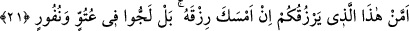

şeklinde anlamak mümkündür. Âyette yer alan “em” kelimesi munkatıa olabileceği gibi
muttasıla da olabilir. Bunun karinesi, âyetin ifâde akışının delâleti üzere mahzuftur.
Mânâ ise; “bu kâmil vasıflar ve her şeyi kuşatıcı kudret sâhibi olan Allah mı sizlere
yardım edebilir? Sizleri yerin dibine batıvermekten, başınıza taş yağdığında sizleri
helâk olmaktan O mu kurtarabilir? Yoksa işâret olunan şu ilâhlar mı?” Bu iddiâ ettiğiniz
şeyler hakkında “sizin Allah’a karşı yardımcılarınız ve askerleriniz” ifâdesi
kullanılabilir. Burada “Rahman” kelimesinin seçilmesi, Allah’ın gazabından kurtarıcı
olanın, sâdece O’nun bu ismi olduğuna işâret olunmak içindir.
Kâşânî bu âyet-i kerîmeyi şöyle anlar: Ağyar denilen başkalarından yardım dilenen
kişiler, hattâ organlar, âletler, kuvvetler ve kendisine tesir ve yardım nispet olunan
bütün aracılar kimdir? Burada belirtildiğine göre, bunlar işte sizin Rahmân’a karşı
yardımcınız ve ordularınızdır. Hadi bakalım onlar, Allah Teâlâ’nın tutmuş olduğu bâtınî
ve zâhirî nimetleri salıversinler bakalım. Yahut onlar Allah’ın salmış olduğu mânevî ve
sûrî nimetleri tutsunlar bakalım tutabilirlerse. Allah Teâlâ’nın takdir buyurmadığı
şeyleri size verebiliyorlarsa versinler. Sizin için takdir buyurduğu ve başınıza gelen
şeylere engel olabileceklerse olsunlar.
“İnkârcılar ancak derin bir gaflet içinde bulunmaktadırlar.” Bunun mânâsı; gerçek
onların zannetiği gibi değildir. Zanlarına göre kendileri, belâlardan sâdece Allah
Teâlâ’nın koruması ile korunmuş değiller. Aksine bu belâlardan ilâhlarının muhâfazası
ile korunmuşlardır. İşte bu zanları doğru değildir. Ya da ilâhlarının kendilerini Allah’ın
azâbından koruduğu iddiâsı, büyük bir aldanma ve şeytan tarafından kendilerine verilen
vesvese ve fahiş bir sapıklıktan başka bir şey değildir. Bu konuda onların genel olarak
itibara alınacak herhangi bir delilleri yoktur.
Bu âyet-i kerîmede hitâb sîgasında gaip sîgasına dönülmesi, onların içinde
bulundukları durumun kendilerinden yüz çevrilmeyi gerektiren bir durum olduğuna
işâret etmek ve onların çirkinlikleri başkalarına açıklamak içindir. Zamir gelecek yerde
“kâfirûn” şeklinde açık isim getirilmesinin sebebi ise, inkârları dolayısıyla kendilerini
kınamak ve niçin aldanış içinde olduklarını onların gözlerinin önüne sermektir.
21. Allah size verdiği rızkı kesiverse, size rızık verebilecek olan kimdir? Hayır,
onlar azgınlık ve nefrette direnip durmaktadırlar.
“O” Rahman “size verdiği rızkı” yağmuru ve buna benzer rızkın ön sebepleri olan
diğer sebepleri engelleyerek “kesiverse, size rızkı verebilecek olan kimdir?” Rızık
mevcûd olsa veya çok ve kolayca ele geçirilebilir bir durumda bulunsa, insan yiyecek
olduğu lokmayı ağzına koysa ve Allah o kimseden yutma kabiliyetini çekip alsa, bütün
göklerde ve yerde bulunanlar o kişiye bu lokmayı yutturmaktan âciz kalırlar. Buna göre,